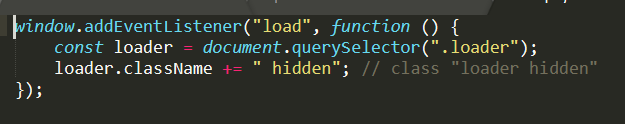

To create a simple loading page can be done usin only HTML, CSS, and JavaScript. It may be easier then one might think and adds a professitional look to a website for the little work that is required.
The HTML for the loading page is very simple. You must add a div inside the
body of the webpage that you would like to have the loading screen appear.
inside the div add a img tag that contains a gif. Set the div class to "loader"
and set the alt of the img to "Loading..." Also do not forget to add the script
that we will make later.
See picture below for the code.
The next step in the process to make the loading page is to
style the image so that it will appear centered and in the
correct position when the page is loading. Define a .loader
class that centers the image in the window and make sure to set
the z-index to 99 so that the image will appaer on top of
everything else.
The next class to define is the .loader > img class.
Inside of this class, set the width of the image to 200px.
Moving forward we create another class called .loader.hidden
This class will be applied when the page is fully loaded, so
we want the image to fade out with a 1 second duration.
Also apply the animation-fill-mode to forwards.
Next define the @keyframes fadeOut rule. Set the opacity to 0
and the visiblity to hidden.
THe final style class that we need to define is the .thumb class.
In this class set the height to 100 px, the boarder to 1px solid black,
and the margin to 10px.
See the code below to make sure you are floowing along corectly.
Finally we will add JavaScript to make the animation function properly.
